First-time user
Learn the feature quickly
- What do I say, and when is Buddy listening?
- What happens after the photo?
- Where will I find my data?
Meets it throughThe two-page intro and Try Now, a guided first log
Buddy, the glasses' voice assistant, identifies a dish through the glasses camera, breaks down its nutrition and logs the meal by voice. The companion app keeps a Nutrition card with daily totals and meal history.
Nutrition is an AI feature on B Glasses. A user looks at their plate and asks Buddy "What's on my plate?" or says "Hey Buddy, log my meal!". Buddy identifies the dish through the glasses camera, breaks down its nutrition, and with the user's confirmation logs it to a Nutrition card in the companion app, with daily totals and history by date.
The brief came as a Phase 1 PRD with three pieces to build: a look-and-tell answer to "What's on my plate?", a voice command to log a meal, and a Nutrition card in the app with daily totals, history by date, and delete.
The PRD named two goals, and every design decision had to serve both:
Eating happens fast; knowing what you ate takes effort. On a phone, you search a food database, pick a portion and save. By then the meal is over, so most meals pass with no insight at all.
B Glasses users had no hands-free way to understand a meal before the first bite, or to keep a daily record without stopping to type.
Glasses usage centred on music and calls. Without a daily, personal use case, there was little reason to talk to Buddy through the day.
I led Nutrition as design lead for B, working with the B design team of one UX and two UI designers. I owned the experience end to end, from reading the PRD to the screens and rules engineering built from.
Discovery combined three things: a requirements review of the Phase 1 PRD, a scan of existing nutrition and smart-glasses experiences, and scenario mapping for first-time and regular users. The scan showed every current option breaks down at the same moment, the meal itself.
| Approach | How it works | Gap |
|---|---|---|
| Manual phone trackers | Search a food database, choose portion, save | High effort per meal; easy to abandon |
| Phone-camera AI trackers | Snap a photo with the phone for an estimate | Phone must come out mid-meal |
| Glasses look-and-tell | Ask the assistant what it sees | Answers, but no structured nutrients or history |
| B Glasses Nutrition | Voice + glasses camera + app card | Hands-free capture, confirmed log, daily history |
The meal is the moment. Capture starts with a voice command, not a phone.
Ask when an item is ambiguous, and never log without explicit consent.
Lead with calories, then macros, then micros on demand.
Use exact brand data when known, and say clearly that values are AI-generated.
Food recognition from a photo is fast becoming a commodity. The real competition is over when capture happens, who stays in control, and what brings people back. That reframing shaped Phase 1 more than any single feature did.
I didn't want a feature checklist. I mapped competitors in two rings and judged each one through the same five questions a user lives through at the table:
Does the person have to stop eating to log?
Who confirms what gets saved, the AI or the user?
How does the product behave when it isn't sure?
Does it understand a multi-dish Indian plate?
What brings the person back tomorrow?
Direct competitors solve the same job on the same form factor: AI glasses that log food. Indirect competitors solve the same job another way: phone-camera AI trackers and manual logging apps. Our users already know these, so they set the bar for expectations.
Ray-Ban Meta and Oakley Meta. The closest benchmark. In April 2026 Meta announced food logging by voice prompt or quick photo, with Meta AI extracting nutrition details into a food log in the Meta AI app (9to5Google). It launched for US users aged 18+, and users still prompt Meta AI and set nutrition goals themselves; automatic logging is promised for later (Road to VR).
Hands-free capture alone is not a moat. The global leader is moving the same way, so B has to win on the experience around capture: confirmation, clarification and local context.
| Product | How capture works | What stood out for design |
|---|---|---|
| HealthifyMe Snap | Phone photo; trained on 150,000 Indian food items (TechCrunch) | Built for Indian plates. With several items in one photo, users select and track each in an adjustable box (CXOToday) |
| MyFitnessPal Meal Scan | Hover the phone camera over the plate | Not fully automatic: users confirm foods, portion and nutrition before saving (BrainStation) |
| Cal AI | Photo, barcode scan, or describe the meal in words | Subscription model; acquired by MyFitnessPal in late 2025, a signal of how valuable photo logging has become (NeuronFeed) |
Every leader keeps a human confirmation step, which validated our "Confirm, don't assume" principle. And all of them still need the phone out mid-meal, which is exactly the moment B Glasses removes.
Classic trackers ask people to search a database, pick a portion and save. Even the photo-first apps market themselves against this: HealthifyMe says food tracking is hard to engage with because users have to type and remember to log (CXOToday).
Effort per meal is the churn driver.
| Question | Phone AI trackers | Meta glasses | B Glasses Nutrition |
|---|---|---|---|
| Capture | Phone comes out mid-meal | Voice or photo, hands-free | Voice + glasses camera, hands-free |
| Control | User confirms in app | User prompts Meta AI to log | Buddy confirms the dish by voice before saving |
| Uncertainty | User swipes alternatives or edits | Not public | Buddy asks a follow-up ("milk or yogurt?"); AI-generated label on every view |
| Indian plates | Strong in HealthifyMe | US launch first | Designed around Indian dishes and branded snacks |
| Return | Diary and goals | Food log in Meta AI app | Daily Nutrition card and 1-year history; goals and trends are next |
As a design lead, the decision this drove was simple. We would not compete on recognition accuracy, which belongs to the AI team and improves on its own. We would compete on the moment of capture and on trust, the two places design owns end to end.
One feature, two very different users. Each meets Nutrition through a different moment, and the design had to answer different questions for each.
Meets it throughThe two-page intro and Try Now, a guided first log
Meets it throughThe Nutrition landing page: daily totals, dates and meal detail
“What's on my plate?”or “How many calories are in this dish?”
“Hey Buddy, log my meal!”
Both stories end with the user in control: 4.1 offers to log, 4.2 confirms before saving. Nothing reaches the Nutrition card without the user's say-so.
A voice feature on a camera wearable fails in real-world ways a phone app never sees. Each one had a defined answer before build.
| Situation | How it's handled |
|---|---|
| Ambiguous item | Buddy asks a follow-up, e.g. "Is this milk or yogurt?" |
| Branded snack | Exact brand data first, generic estimate second |
| Dirty lens | Unclear image is treated as an edge case |
| Battery below 10% | Feature unavailable |
| No Bluetooth or weak network | Feature needs both to work |
| Logout, then login | Meal history resyncs |
| Account deleted | Nutrition data is erased |
One flow covers both users. A returning-user check skips onboarding; date selection, empty states and deletion all branch off the Nutrition landing page.
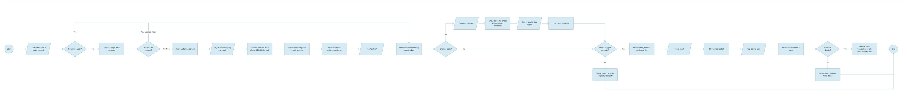
Decision points
A new user has never spoken to their glasses about food. Five screens teach the exact phrase, show what the glasses are doing, and end on where the results will live.
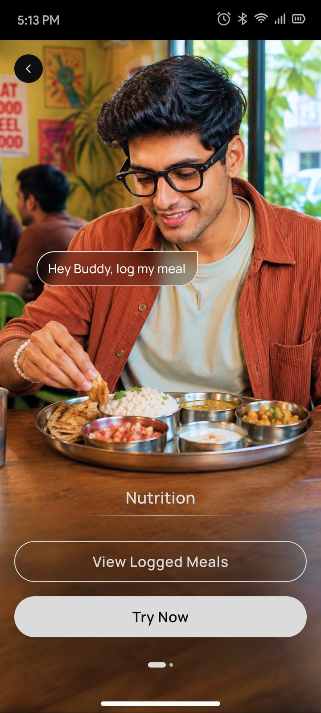
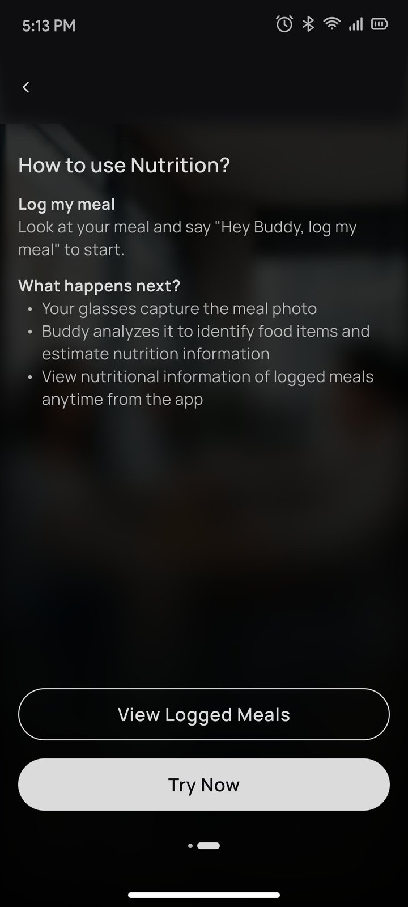
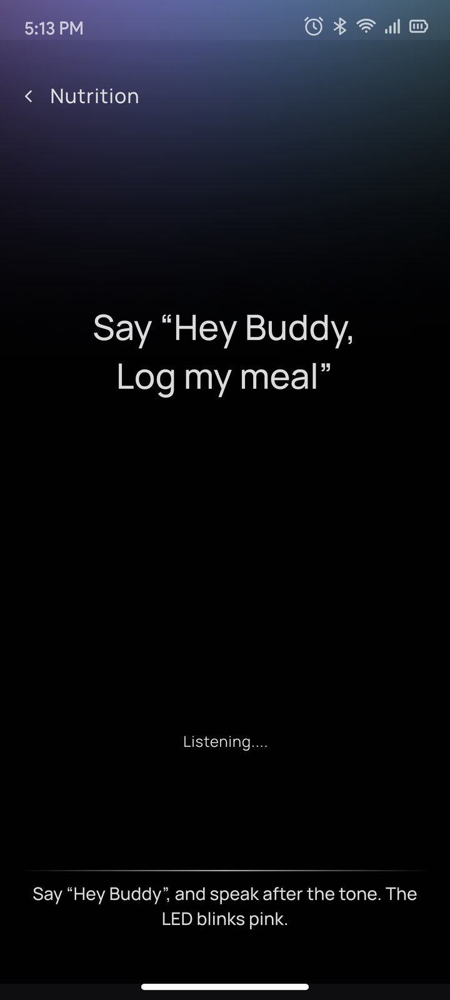
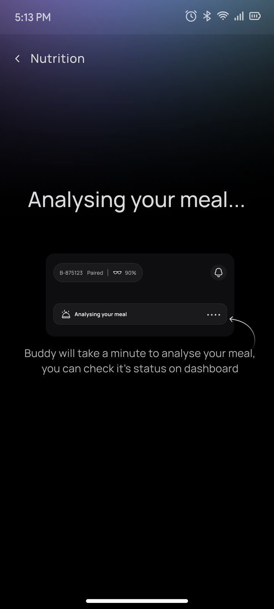
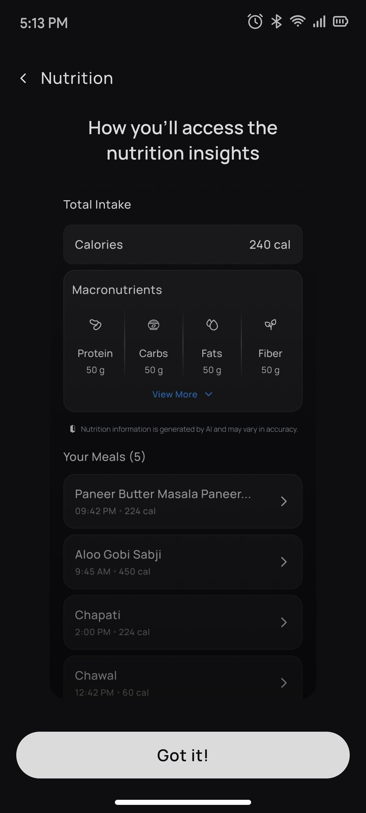
The landing page is where a regular user spends their time, so every state of the day had to be clearly signalled.
| State | What the user sees |
|---|---|
| Empty | "Nothing on your plate yet" with the voice command in Buddy's gradient |
| Analysing | The new meal appears as a processing row, so nothing blocks the user |
| Logged | Calories, then macros, then the meal list with time and calories |
| Expanded | View More reveals micronutrients; View Less folds them back |
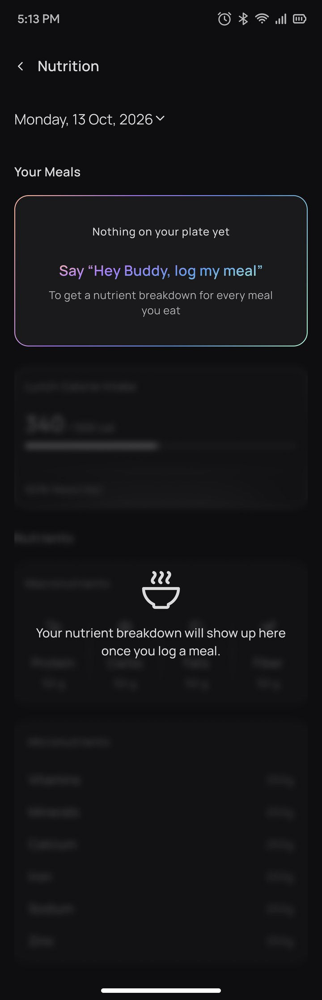
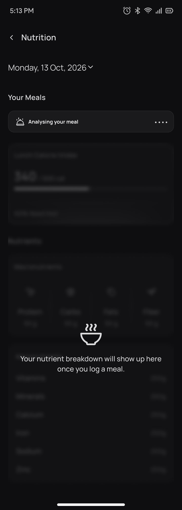
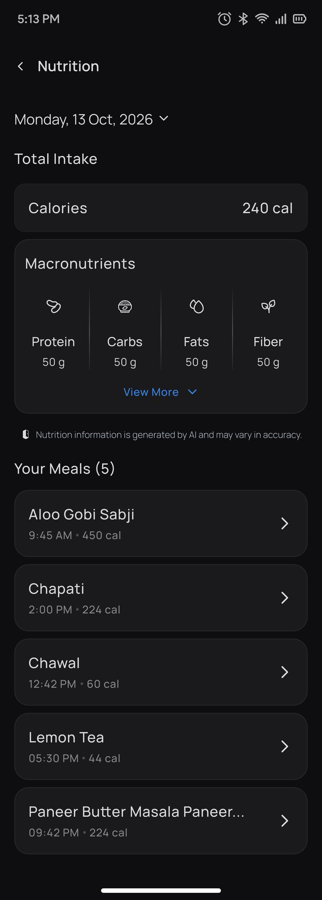
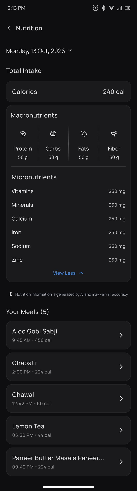
Review any day, correct any mistake.
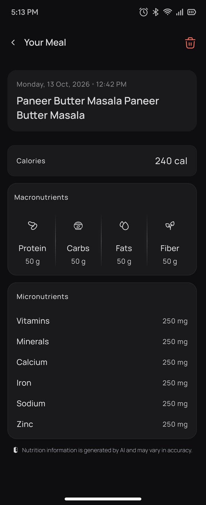
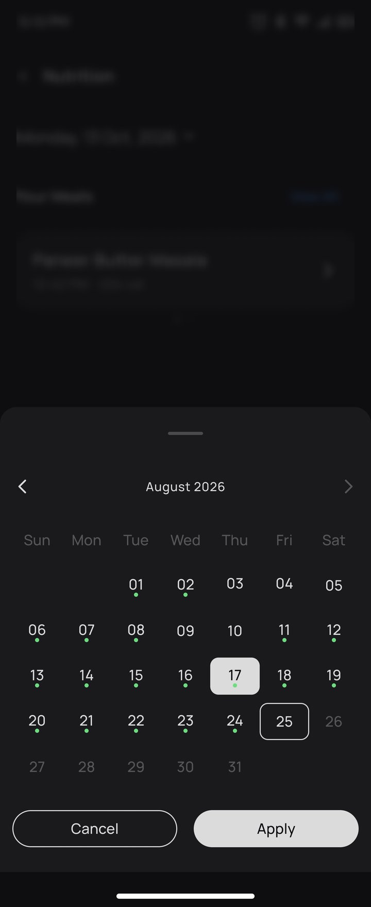
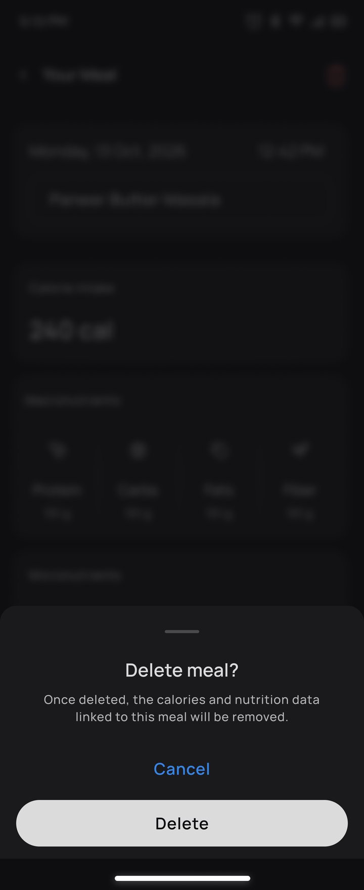
Date picker rules. Only dates up to today can be selected, future dates are disabled, and a dot marks days with logged meals. That gives five date states:
Matches the B Glasses app and keeps food photos and numbers in focus
Every voice prompt uses the same purple gradient, so users learn what to say
Calories first, macros next, micros behind View More, so the screen stays glanceable
Listening, Analysing and Logged states mirror what the glasses are doing
Delete always asks for confirmation and explains that nutrition data is removed
Each nutrition view says values are AI-generated and may vary in accuracy
Speed against control. Logging should feel instant, but a wrong log damages trust. So Buddy confirms the dish by voice before saving, and the Analysing row keeps the app usable while that happens.
Every PRD requirement has a visible answer in the experience.
| PRD requirement | Design response |
|---|---|
| Image trigger: wake word + intent | "Hey Buddy, log my meal" taught in onboarding; Listening screen and pink LED cue |
| Calories, macros and micros | Total intake card, macro row with icons, micronutrient list |
| Clarification dialogue | Buddy asks a follow-up by voice; the exchange is saved as an AI transcript |
| Explicit confirmation before logging | Buddy confirms the dish by voice before the meal is saved |
| Perceived latency under 5 s | Analysing row in Your Meals keeps the app usable while processing |
| Meal logs by date, deletable | Date chevron and calendar sheet; meal detail with delete confirmation |
| Branded snacks | Exact brand data takes priority over a generic estimate |
| Data deletion and resync | Account deletion erases nutrition data; history returns after re-login |
See your food. Know your food.